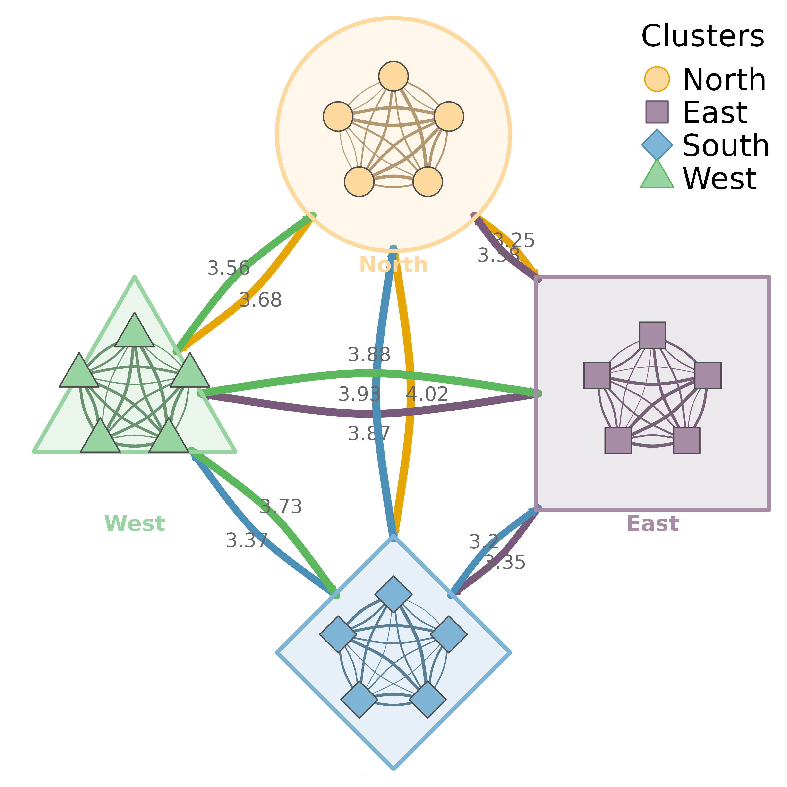
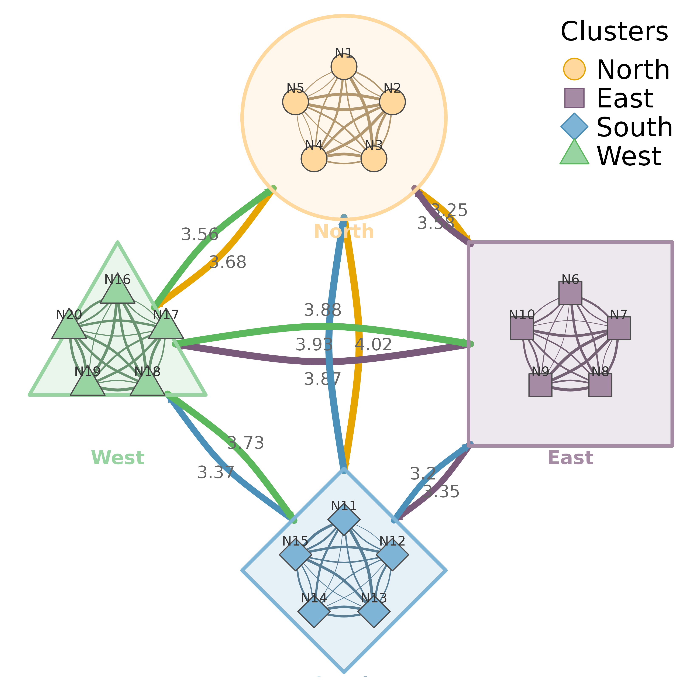
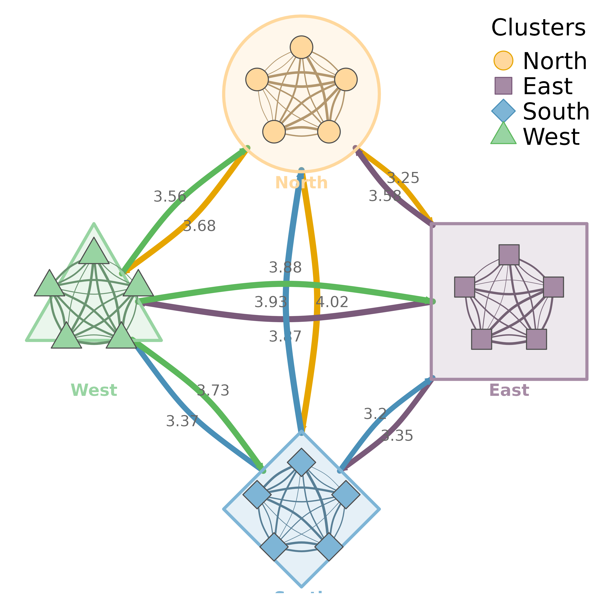
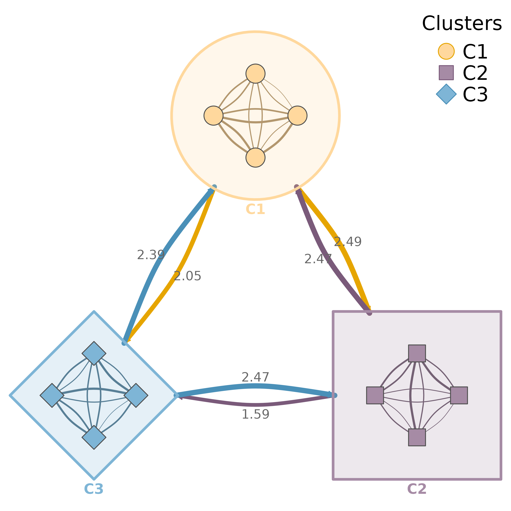

Visualizes multiple network clusters with summary edges between clusters and individual edges within clusters. Each cluster is displayed as a shape (circle, square, diamond, triangle) containing its nodes.
Usage
plot_mtna(
x,
cluster_list = NULL,
community = NULL,
layout = "circle",
spacing = 4,
shape_size = 1.8,
node_spacing = 0.5,
colors = NULL,
shapes = NULL,
edge_colors = NULL,
bundle_edges = TRUE,
bundle_strength = 0.8,
summary_edges = TRUE,
aggregation = c("sum", "mean", "max", "min", "median", "density"),
within_edges = TRUE,
show_border = TRUE,
legend = TRUE,
legend_position = "topright",
curvature = 0.3,
node_size = 3,
layout_margin = 0.15,
scale = 1,
show_labels = FALSE,
nodes = NULL,
label_size = NULL,
label_abbrev = NULL,
cluster_shape = NULL,
...
)
mtna(
x,
cluster_list = NULL,
community = NULL,
layout = "circle",
spacing = 4,
shape_size = 1.8,
node_spacing = 0.5,
colors = NULL,
shapes = NULL,
edge_colors = NULL,
bundle_edges = TRUE,
bundle_strength = 0.8,
summary_edges = TRUE,
aggregation = c("sum", "mean", "max", "min", "median", "density"),
within_edges = TRUE,
show_border = TRUE,
legend = TRUE,
legend_position = "topright",
curvature = 0.3,
node_size = 3,
layout_margin = 0.15,
scale = 1,
show_labels = FALSE,
nodes = NULL,
label_size = NULL,
label_abbrev = NULL,
cluster_shape = NULL,
...
)Arguments
- x
A tna object, weight matrix, cograph_network, or cluster_summary object.
- cluster_list
Clusters can be specified as:
A list of character vectors (node names per cluster)
A string column name from nodes data (e.g., "groups")
NULL with
communityspecified for auto-detection
- community
Community detection method to use for auto-clustering. If specified, overrides
cluster_list. Seedetect_communitiesfor available methods: "louvain", "walktrap", "fast_greedy", "label_prop", "infomap", "leiden".- layout
How to arrange the clusters: "circle" (default), "grid", "horizontal", "vertical".
- spacing
Distance between cluster centers. Default 4.
- shape_size
Size of each cluster shape (shell radius). Default 1.8.
- node_spacing
Radius for node placement within shapes (0-1 relative to shape_size). Default 0.5.
- colors
Vector of colors for each cluster. Default auto-generated.
- shapes
Vector of shapes for each cluster: "circle", "square", "diamond", "triangle". Default cycles through these.
- edge_colors
Vector of edge colors by source cluster. Default auto-generated.
- bundle_edges
Logical. Bundle inter-cluster edges through channels. Default TRUE.
- bundle_strength
How tightly to bundle edges (0-1). Default 0.8.
- summary_edges
Logical. Show aggregated summary edges between clusters instead of individual node edges. Default TRUE.
- aggregation
Method for aggregating edge weights between clusters: "sum" (total flow), "mean" (average strength), "max" (strongest link), "min" (weakest link), "median", or "density" (normalized by possible edges). Default "sum". Only used when summary_edges = TRUE.
- within_edges
Logical. When summary_edges is TRUE, also show individual edges within each cluster. Default TRUE.
- show_border
Logical. Draw a border around each cluster. Default TRUE.
- legend
Logical. Whether to show legend. Default TRUE.
- legend_position
Position for legend. Default "topright".
- curvature
Edge curvature. Default 0.3.
- node_size
Size of nodes inside shapes. Default 3.
- layout_margin
Margin around the layout as fraction of range. Default 0.15.
- scale
Scaling factor for spacing parameters. Use scale > 1 for high-resolution output (e.g., scale = 4 for 300 dpi). This multiplies spacing and shape_size to maintain proper proportions at higher resolutions. Default 1.
- show_labels
Logical. Show node labels inside clusters. Default FALSE.
- nodes
Node metadata. Can be:
NULL (default): Use existing nodes data from cograph_network
Data frame: Must have
labelcolumn for matching; iflabelscolumn exists, uses it for display text
Display priority:
labelscolumn >labelcolumn (identifiers).- label_size
Label text size. Default NULL (auto-scaled).
- label_abbrev
Label abbreviation: NULL (none), integer (max chars), or "auto" (adaptive based on node count).
- cluster_shape
Shape for cluster summary nodes when using summary view. Can be single value or vector. Overrides
shapes. Default NULL (use shapes).- ...
Additional parameters passed to plot_tna().
Value
Invisibly returns a cluster_summary object for summary mode, or the plot_tna result otherwise.
See plot_mtna.
Examples
# \donttest{
# Create network with 4 clusters
nodes <- paste0("N", 1:20)
m <- matrix(runif(400, 0, 0.3), 20, 20)
diag(m) <- 0
colnames(m) <- rownames(m) <- nodes
clusters <- list(
North = paste0("N", 1:5),
East = paste0("N", 6:10),
South = paste0("N", 11:15),
West = paste0("N", 16:20)
)
# Summary edges between clusters + individual edges within
plot_mtna(m, clusters, summary_edges = TRUE)

# With node labels
plot_mtna(m, clusters, show_labels = TRUE, label_abbrev = 3)

# Control spacing and sizes
plot_mtna(m, clusters, spacing = 4, shape_size = 1.5, node_spacing = 0.6)

# }
# \donttest{
nodes <- paste0("N", 1:12)
m <- matrix(runif(144, 0, 0.3), 12, 12)
diag(m) <- 0
colnames(m) <- rownames(m) <- nodes
clusters <- list(C1 = nodes[1:4], C2 = nodes[5:8], C3 = nodes[9:12])
mtna(m, clusters)

# }